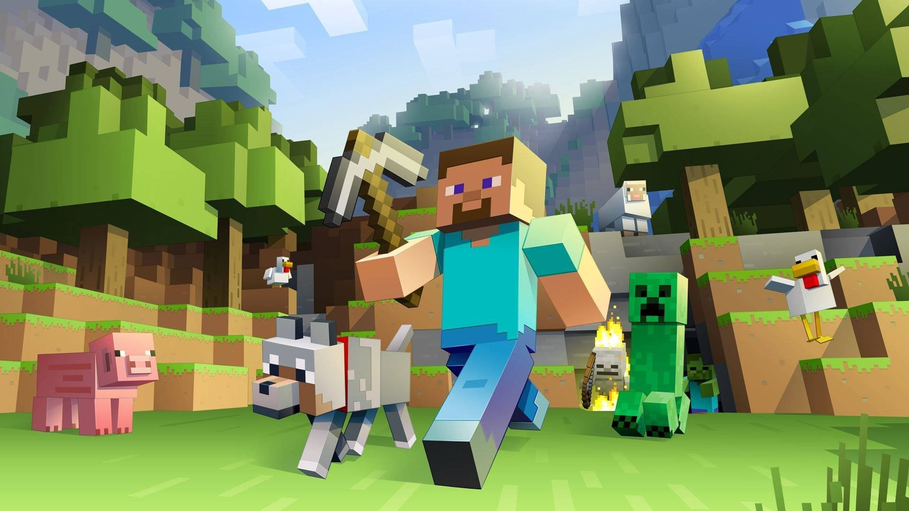
Minecraft
The first Minecraft prototype was built by Markus “Notch” Persson in just six days.
Amazing and fun facts about the geek universe.

The first Minecraft prototype was built by Markus “Notch” Persson in just six days.
The famous Konami Code was born when a developer found Gradius too hard while testing and built a shortcut to make it easier.
The Elder Scrolls II: Daggerfall has one of the largest maps ever made, with over 15,000 towns, villages and dungeons.
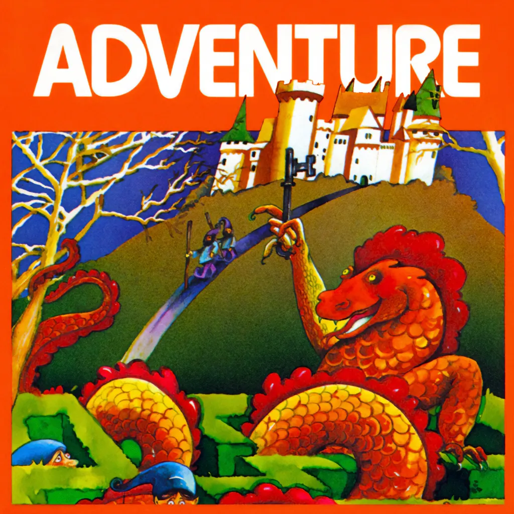
The first famous video game easter egg is in Adventure (1980), by Atari: a secret room with the programmer's name.
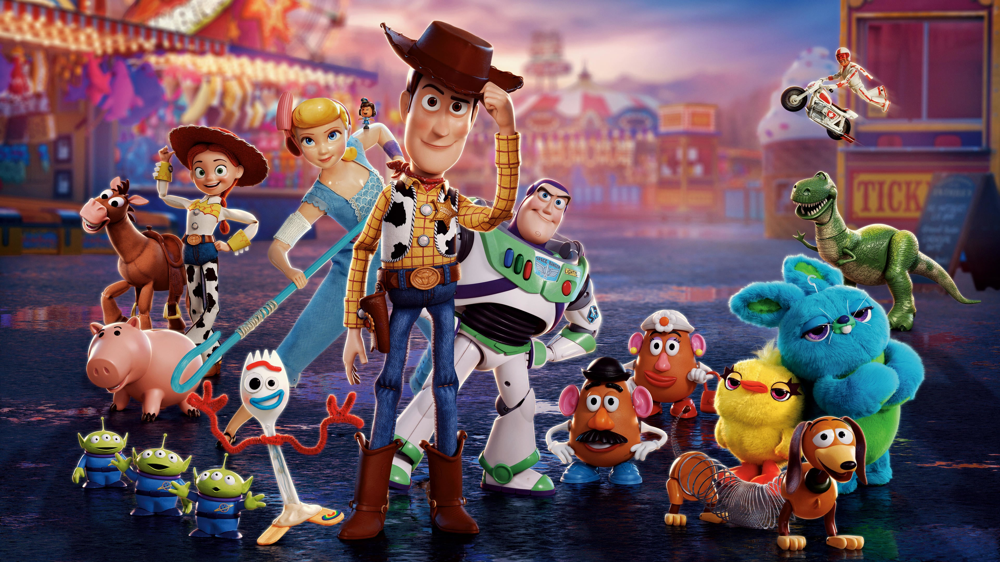
Toy Story (1995) was the first feature film made entirely with computer animation.
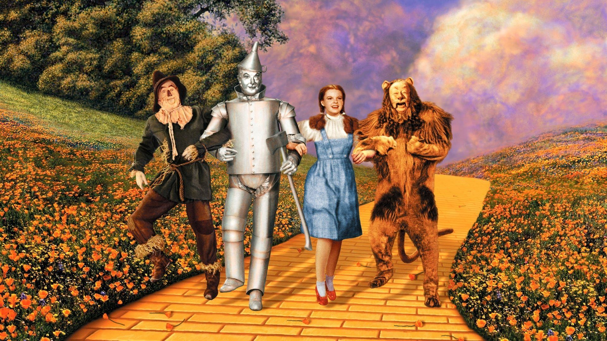
The first Tin Man, Buddy Ebsen, was hospitalized by the aluminum-dust makeup and replaced by Jack Haley.
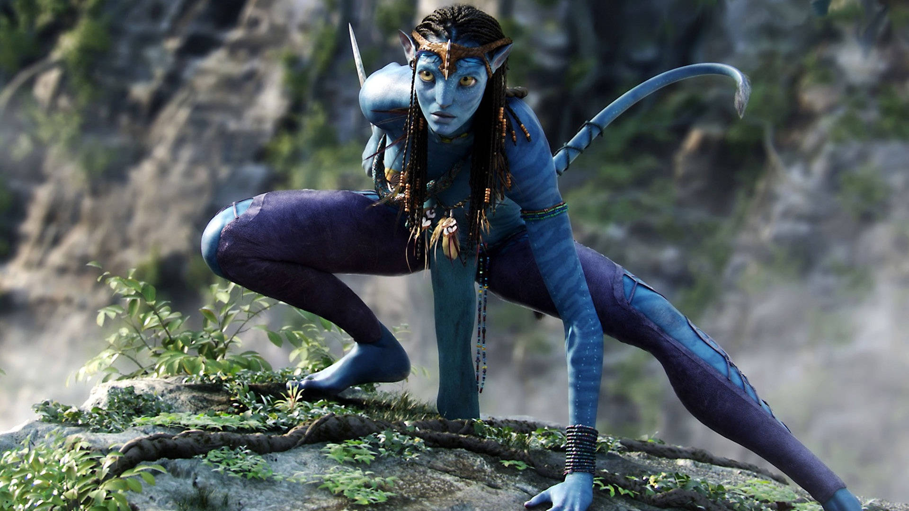
During production, James Cameron's film had the working title “Project 880”.
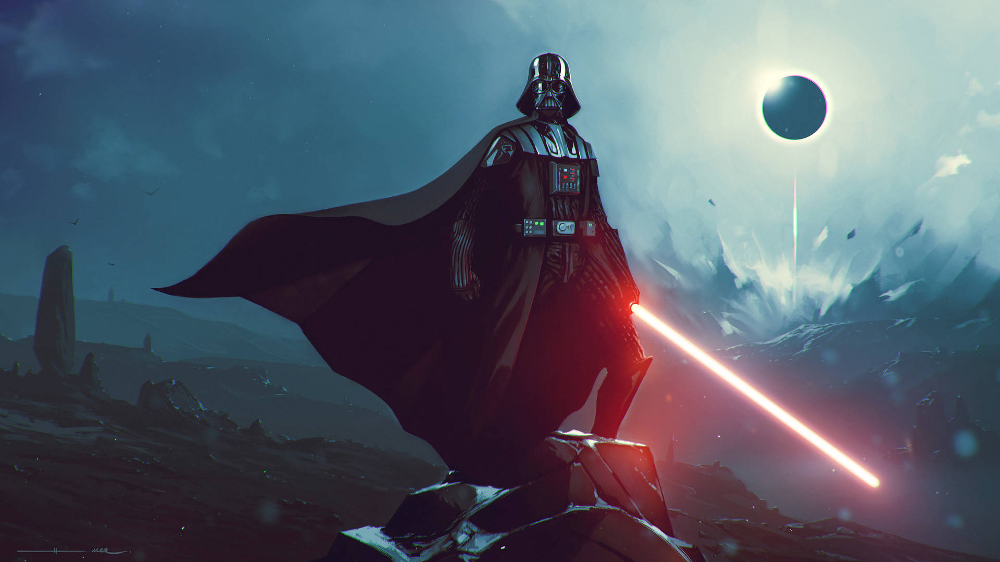
Darth Vader's breathing was created by sound designer Ben Burtt using a real scuba regulator.
Matthew Broderick was reportedly considered for Walter White before Bryan Cranston got the role.
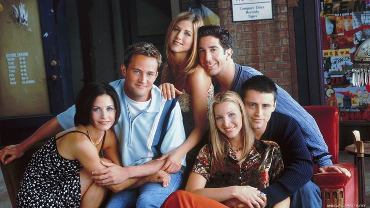
In the last two seasons, each of the six Friends leads earned $1 million per episode.
Game of Thrones won 59 Emmy Awards during its run, a record for a drama series.
The Mandalorian popularized StageCraft, using giant LED walls instead of green screen.
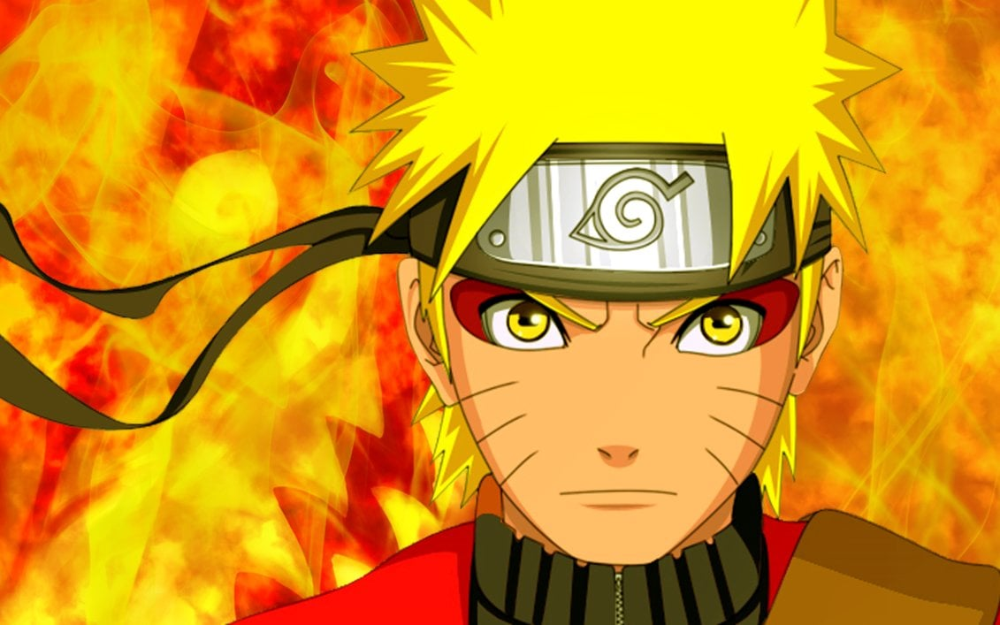
Naruto began as a one-shot published in 1997, before becoming a weekly series in 1999.
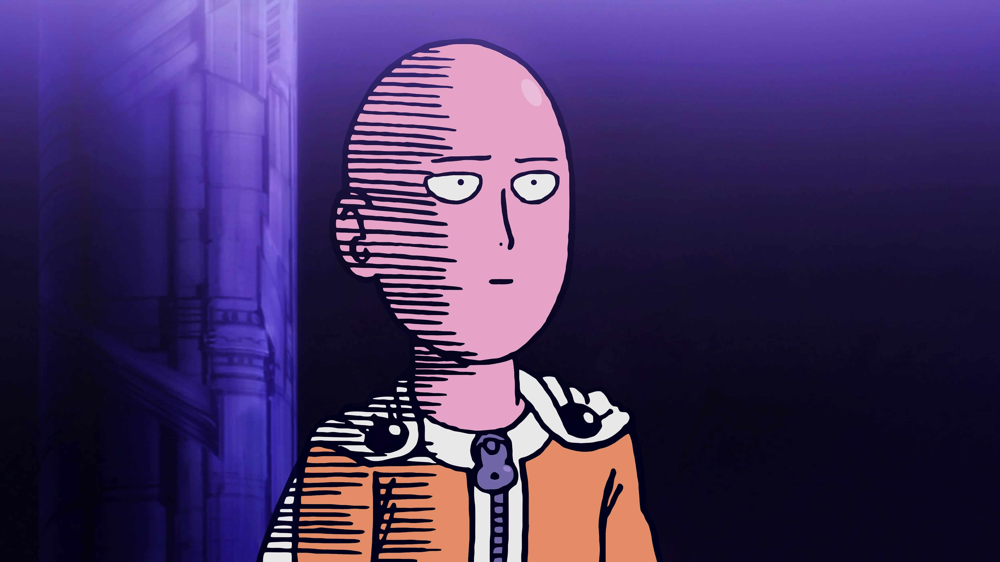
One Punch Man began as a simply drawn webcomic by ONE, later redrawn by Yusuke Murata.
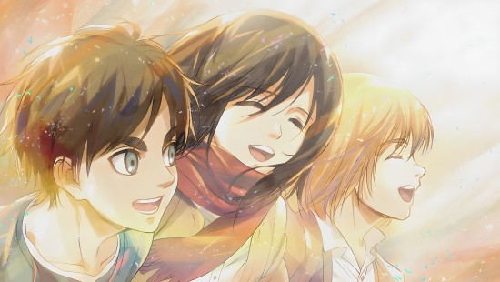
Before being published, the Attack on Titan manga was turned down by Shonen Jump and ended up in Bessatsu Shonen Magazine.
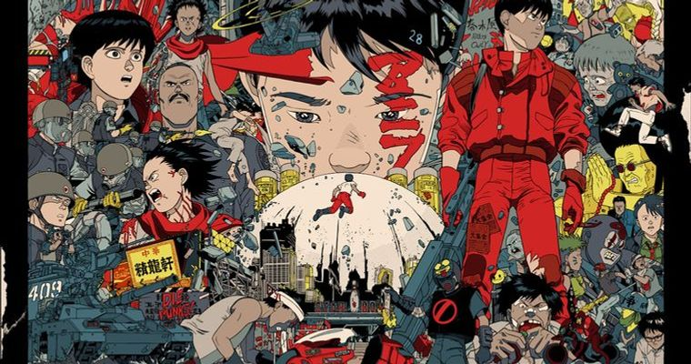
Akira (1988) used around 160,000 hand-drawn cels, a record at the time.
Don Quixote, by Miguel de Cervantes, is often cited as the best-selling work of fiction ever.
Agatha Christie is the most translated author in the world, with works published in over 100 languages.
Stephen King threw the Carrie draft in the trash; his wife rescued it and urged him to keep going.
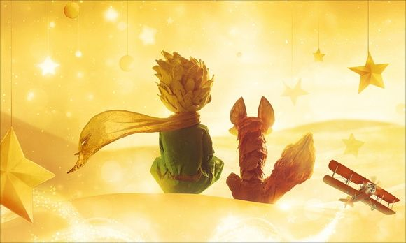
The Little Prince is among the most translated books in history, with editions in hundreds of languages and dialects.
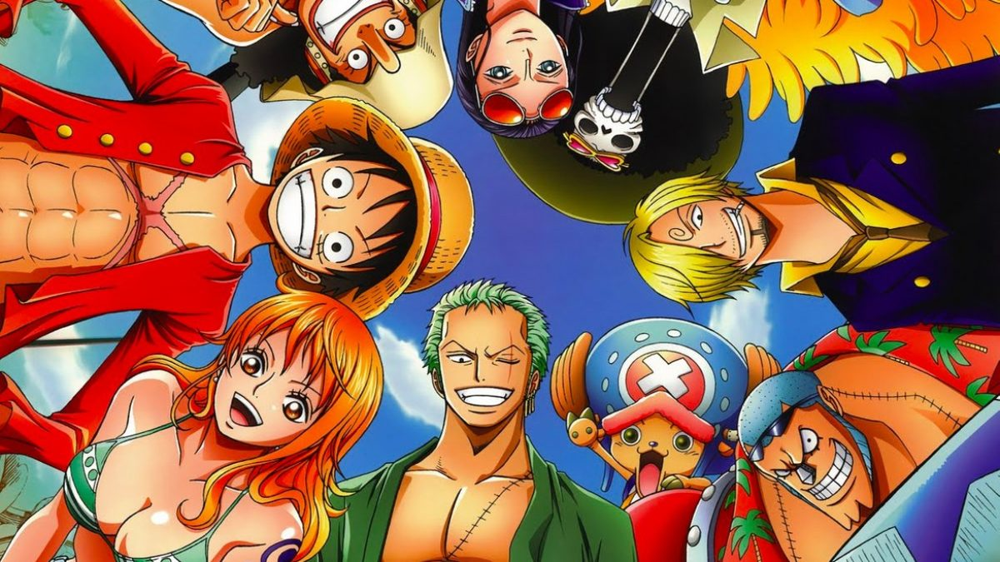
One Piece is the best-selling manga in the world, with over 500 million copies in circulation.
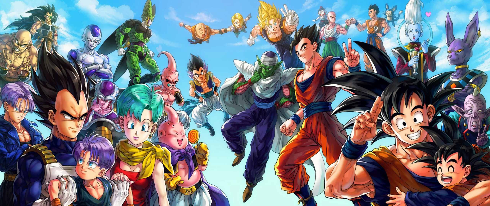
Akira Toriyama drew on the Chinese classic Journey to the West to create Dragon Ball.
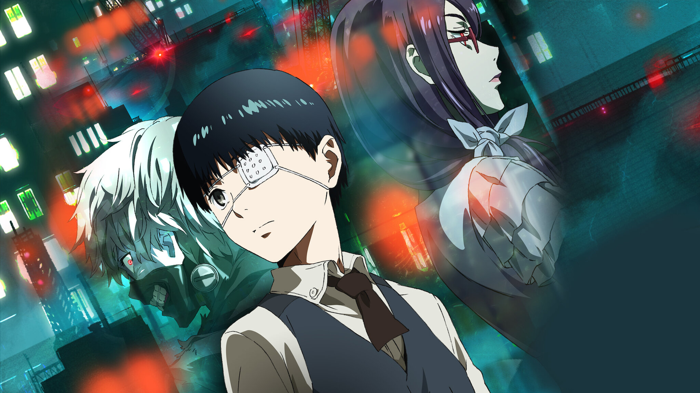
Tokyo Ghoul ran in Weekly Young Jump from 2011 to 2014, before continuing as Tokyo Ghoul:re.

With weekly releases, many mangaka report extremely long work weeks and sleeping at their studios.